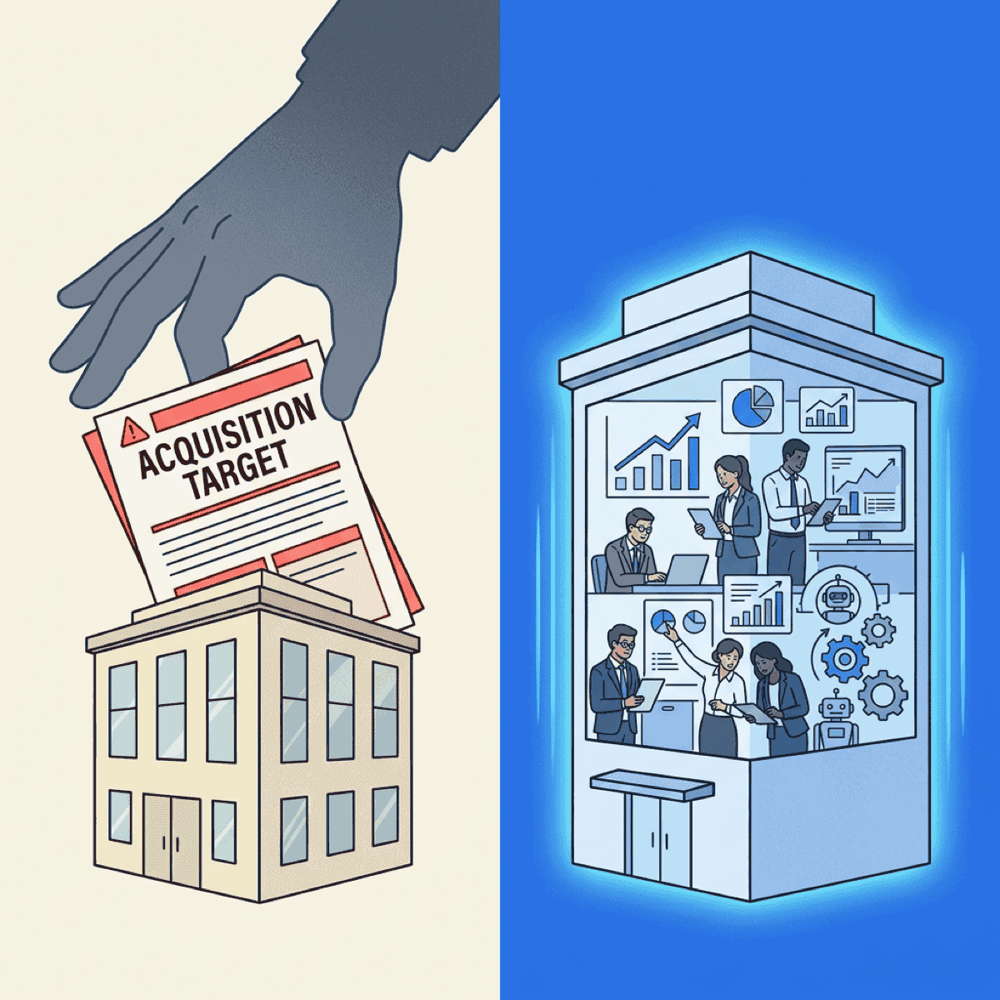

AI-Buyout Your Own Company Before Someone Else Does

TL;DR
- PE firms are buying companies to automate them — General Catalyst has $1.5 billion allocated to acquire services companies and double their margins with AI
- The playbook is already working — Long Lake hit $100M EBITDA in under two years by acquiring boring services companies and injecting AI
- 63% of mid-market firms feel unprepared for AI, which makes them prime acquisition targets
- Run a Self-Disruption Audit now — map your automatable surface area before an acquirer does it for you A private equity firm just raised $1.5 billion with a single thesis: buy traditional services companies, inject AI automation, and double their margins within 12 months. They analyzed 70 service categories and identified 10 verticals where 30-50% of tasks are automatable today.
The question every mid-market CEO should be asking: is your company on someone’s list?
This isn’t a theoretical exercise. The playbook is live. And if you don’t automate your own operations first, someone with deeper pockets and a proven AI playbook will do it for you — and they’ll keep the upside.
The new acquirer’s playbook
Private equity has always been about buying undervalued companies and improving operations. But AI has fundamentally changed the math.
General Catalyst’s “creation strategy” doesn’t just optimize — it transforms. They acquire services companies, deploy AI automation across repetitive workflows, and convert thin-margin service businesses into companies with software-like margins of 30-40%. Portfolio companies like Eudia (legal), Titan (IT services), and Long Lake (HOA management) are doubling EBITDA margins within 12 months.
They’re not alone. Vista Equity Partners, managing over $100 billion in assets, plans to cut its own workforce by up to one-third using AI.
Their CEO Robert F. Smith told 5,500 finance professionals at the SuperReturn conference: “We think that next year, 40% will have an agent and the remaining 60% will be looking for work.” When the acquirers are automating themselves, imagine what they plan for the companies they buy.
If you don’t automate your own operations, someone with a $1.5 billion fund and an AI playbook will do it for you — and they’ll keep the margin.
— Clarke Bishop
What the playbook looks like in practice
Long Lake Management Holdings might be the most instructive example. It’s not a flashy tech company — it manages homeowner associations. HOA management. Property maintenance. Board meetings. The kind of business no one writes breathless headlines about.
That’s exactly why it’s worth watching.
Backed by General Catalyst, Long Lake has acquired 18 businesses across residential services, business services, and infrastructure services. They deployed AI tools across these acquisitions and saw 25-30% productivity gains per team member. Their AI-powered sales motion increased the new customer pipeline by 10x.
The result: $100 million in EBITDA in under two years. For context, most traditional roll-ups take five to seven years to reach that milestone.
Long Lake’s playbook is simple. Buy a labor-intensive services company. Automate the repetitive workflows — scheduling, communications, compliance documentation, invoice processing. Keep the people who handle relationships and judgment calls. Redeploy savings into growth and better compensation.
And it’s not just property management. Titan is running the same play in IT services, automating 38% of typical tasks in managed service provider workflows. Eudia is doing it in legal, signing Fortune 500 clients like Cargill, DHL, and Duracell on fixed-fee AI-powered legal services.
If your company has a high labor-to-revenue ratio and hasn’t started automating, you look exactly like one of these acquisition targets. That’s not a comfortable position to be in.
The Klarna warning
Not every company gets the AI transformation right. Klarna is the most visible example of what happens when you move too fast and cut too deep.
The fintech company cut headcount roughly 40% — from roughly 5,500 to under 3,000 — and replaced much of its customer service operation with AI. CEO Sebastian Siemiatkowski initially celebrated the results.
Then the problems hit. Customer service quality degraded. AI responses were generic and repetitive, unable to handle complex issues. The CEO publicly admitted “we focused too much on efficiency and cost.” Klarna started rehiring human agents. Engineers were reassigned to answer phones when the AI couldn’t handle volume.
The stock tells the rest of the story — down more than 65% from its IPO price.
Klarna isn’t an argument against AI transformation. It’s an argument against doing it recklessly. An Orgvue survey of 1,100+ C-suite leaders found that 55% of companies that made AI-driven layoffs now regret those decisions. The lesson: automate workflows, not people. Augment your team, then let natural attrition handle the rest.
The companies getting this right — Long Lake, Titan, Eudia — are investing in AI-augmented teams, not AI-replaced teams. That’s the difference between a transformation and a debacle.
Why mid-market companies are the target
The U.S. services market generates $6 trillion annually — substantially exceeding the entire $370 billion software market. That’s where the AI roll-up investors see the real opportunity.
And most mid-market companies aren’t ready. RSM’s 2025 AI survey found that 53% feel only “somewhat prepared” for AI, with another 10% underprepared or not prepared at all.
Meanwhile, 88% of organizations use AI in at least one business function, up from 78% a year prior. But here’s the gap: only 7% have fully scaled AI across their organizations.
Nearly two-thirds are still experimenting or running isolated pilots — testing AI in pockets without integrating it into core workflows.
That gap between adoption and execution is exactly what makes companies attractive to acquirers. You’ve started dabbling but haven’t transformed. Someone with capital and a playbook sees that as pure upside.
Being “unprepared” doesn’t mean you get to wait. It means someone with a billion-dollar fund and an AI automation team sees opportunity where you see complexity.
The market is repricing around you
If the acquirer risk feels abstract, look at what happened to the software industry in February 2026.
Over ten days, the “Software-mageddon” selloff erased over $1 trillion in SaaS market value. The catalyst? AI agents can now migrate entire company databases and rebuild workflows autonomously.
Per-seat SaaS pricing models are collapsing as a result.
The switching costs that protected legacy software vendors for decades are evaporating. And the same dynamic applies to service businesses. The moats that protected your margins — institutional knowledge, complex processes, customer relationships — are exactly what AI is getting good at replicating.
Gartner predicts that 30% of enterprises will automate more than half their network activities by the end of 2026, up from under 10% in 2023. TechCrunch’s year-end investor survey called 2026 “the year of agents” — the year AI moves from making humans more productive to automating work itself.
The window to act on your own terms is narrowing. Every quarter you delay, the acquirers refine their playbook — and the gap between what your company is worth now versus post-automation gets wider.
The companies that win aren’t the ones with the most AI tools. They’re the ones that automated themselves before someone else did.
— Clarke Bishop
How to buyout your own company
The good news: you can run the same playbook the PE firms are using — and keep the upside for yourself. Here’s the Self-Disruption Audit framework that works.
1. Map your labor-to-revenue ratio
Where are humans doing work that AI agents can handle today? Start with the highest-volume, most repetitive categories: customer service, data entry, reporting, compliance documentation, and invoice processing.
Don’t guess. Pull your headcount data by function and calculate the cost per unit of output. That’s what an acquirer would do first.
2. Identify your automatable surface area
General Catalyst found 30-50% of tasks automatable in their target verticals. What’s your number?
Be brutally honest. Walk through each department and ask: if an AI agent could handle this task 80% as well as a human, would that be good enough? For many back-office functions, the answer is yes.
3. Run the Long Lake math
Long Lake achieved 25-30% productivity gains per team member with AI tools. If you could get even half that — a 15% productivity gain across your workforce — what does that do to your margins? Build the business case in a spreadsheet. That’s your self-disruption ROI.
This isn’t about firing people. It’s about not replacing departures with humans when AI can do the work — and reinvesting savings into the people who stay. Learn from Klarna: augmentation beats replacement.
4. Invest the savings — don’t just pocket them
The companies that win aren’t just cutting costs. They’re redeploying savings into higher-value work, better talent retention, and competitive moats that AI can’t easily replicate.
Raise pay for your best people. Fund R&D. Build proprietary data advantages. The cost savings only matter if you reinvest them in ways that make your company harder to acquire.
5. Move before the acquirers do
If your company shows up on a PE firm’s “automatable” shortlist, you’ve already lost leverage. The time to act is while you still control the terms.
Every quarter you wait, the acquirers get better at their playbook. And the gap between what your company is worth today and what it could be worth post-automation is exactly the premium they plan to capture.
The bottom line
The biggest risk isn’t that AI will replace your workers. It’s that someone else will use AI to replace your workers — and own the upside.
PE firms are deploying billions to systematically identify companies with high labor-to-revenue ratios, automate them, and capture the margin expansion. Long Lake proved it works — $100M EBITDA in under two years from boring services businesses. The acquirer playbook is live.
You have two choices: run the Self-Disruption Audit yourself, or wait until someone with a $1.5 billion fund does it for you. One path lets you keep your independence, your margins, and your best people. The other turns you into someone else’s portfolio company.
Start with one department. Map the automatable surface area. Run the math.
In my experience, companies that begin this audit discover two things. First, more of their workflow is automatable than they assumed. Second, their best people are relieved — they’ve been waiting for someone to take the repetitive work off their plates.
The companies that act now write their own future. The ones that wait become someone else’s case study.
Ready to accelerate your AI initiatives? Let’s talk about how fractional CTO support can help your team move faster.